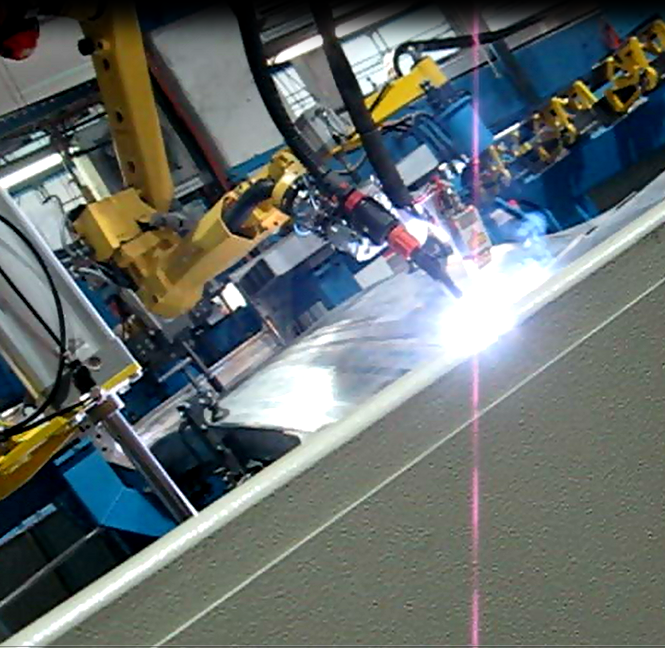
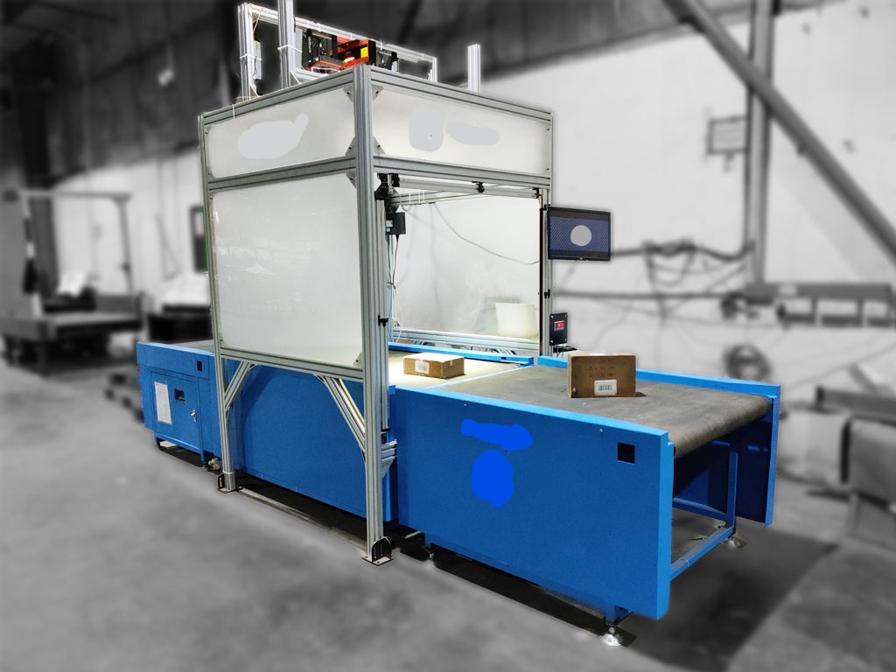
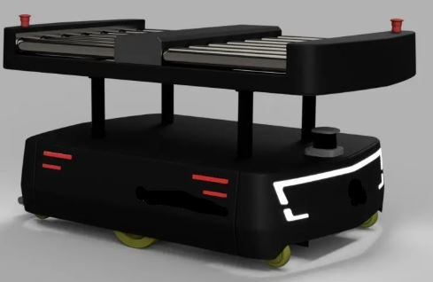
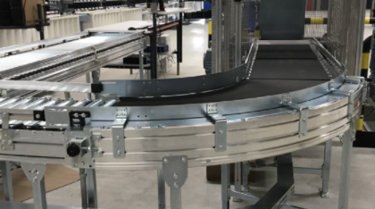
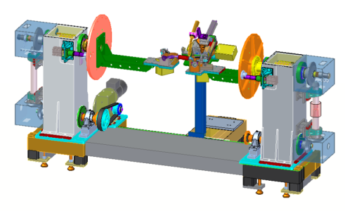

Chetan's Professional Projects
FANUC 6-DOF Robot
My project with FANUC Arc Mate 100ic involved setup and operation of this 6-DOF welding robot. This included mechanical stabilization and overseeing the hardware connections. Setup and inilization of TCP(Tool Center Point Control), Frame setup. Tuning and jogging the robot including wrist jogging, remote TCP jogging and PATH jogging. Then the challenging and critical task was setting up the ARCTOOL. This involved various tasks such as setting up ARC welding I/O, performing weld procedures such as SPEED RAMPING and WELD RAMPING, and WEAVE setup procedure. Teaching KAREL programming variables including positions and paths. To add to this experience, my first semester course during my Masters study - Robotics I, I learnt to calculate the Jacobian of 6-DOF robot and study all the singularities that may arise in a 6-DOF robot. The Robot that was used tyo perform this case study was FANUC LR Mate 200ic.
Dynamic Dimensioning and Weighing System
The Dynamic DWS (Dimensioning and Weighing System) as the name suggests can measure the dimensions and wieght of the product on the conveyor line upto a conveyor speed of 100 m/min. The weight of the product is measured by the load cells attached at the base of the conveyor. The camera attached at the top frame takes the image of the product and processes the image to calculate its dimensions of the product with an accuracy of upto 5mm. Various image processing alogorithms are used to perform this task i.e. Harris Corner detection. A proximity sensor is also integrated into the system to give the correct time to capture the image and record the weight of the product simultaneously. Entire system was controlled by Siemsns PLC. First, the entire system was modelled in a 3-D software and then simulated for results.
Autonomous Guided Vehicles (AGVs)
AGVs have become integral part of warehouse Automation technology. I have been involved in the 3-D design along with implementing automation system of warehouse AGVs. The vehicle uses LIDAR to scan the environment and create a 3-D map which is then used to navigate through the environment using path finding algorithms.
Conveyor Automation
I have been involved with various automation teams to work on conveyor automation projects which included - Roller Conveyors, Belt Conveyors, Gravity Conveyors, Plastic Modular Conveyor, Flexible Conveyor. I have also worked on various sorter systems including Linear sorter and Steerable wheel sorter.
Special Purpose Machines (SPMs)
I have worked on design and integration of Special purpose machines which include Welding Positioner SPM, Multi-drilling SPM and Automatic Lathe SPM.